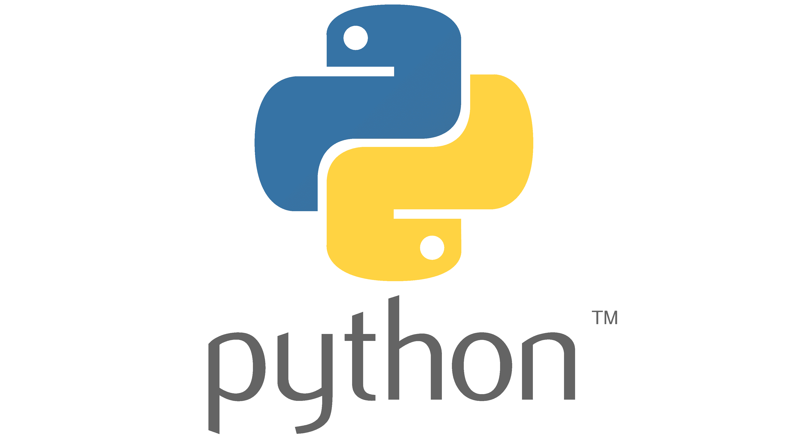

I’m a
I build modern data platforms, dashboards, and data products using Microsoft Fabric, Azure, Power BI and Python. I help organizations turn raw data into strategic insight — fast, scalable, and secure.
End-to-end DataWarehouse & Power BI implementation in Microsoft Fabric, including metadata-driven pipelines, medallion architecture, governance, and live monitoring reports.

Led redesign as Product Owner; built a centralized Microsoft Fabric DWH across 7 government partners, aligned standards (BIO2.0, WAF, WEF), and planned Purview integration.

Designed and implemented a Fabric-based data platform with Kimball modeling, RLS, data quality automation, Balanced Scorecard reporting, and end-user training.

Re-engineered data models and MDM processes in a childcare context. Improved lineage tracking, optimized SQL performance, and integrated multi-source data.
Built Azure-based DWH with CI/CD pipelines in GitHub Actions. Integrated data from 10+ sources, implemented Kimball modeling, RLS/OLS, and stakeholder change management.
Integrated new ERP data into an existing DWH. Modeled new entities, performed data migration validation, MDM checks, and supported go/no-go for billing.

Migrated legacy ETL to Azure; designed metadata-based pipelines and used Python ML to analyze marketing and customer return prediction.
Extended ETL pipelines for optimizing last-mile carrier selection using Qlikview; added business rules based on delivery speed and price.
Created MDM workflows in Power Apps/Power Flow for Certified Reporting. Designed role-based access, dashboards, and automated data entry approval processes.

Full Power BI implementation for construction project insights. Connected APIs, automated data pipelines, and trained internal users.

Replaced Excel & Qlikview with centralized Power BI dashboards across departments. Built DAX calculations, conducted interviews, and optimized data flows.
Built ship monitoring dashboards using Power BI and Azure. Developed competition analysis tools in Python and advised on data collection improvements.

DP-600 Fabric Analytics Engineer Associate

DP-203 Data Engineering on Microsoft Azure

PL-300 Microsoft Power BI Data Analyst
AZ-900 Microsoft Azure Fundamentals

Databricks Lakehouse Fundamentals
Agile Business Body of Knowledge (Scrum, Kanban etc.)